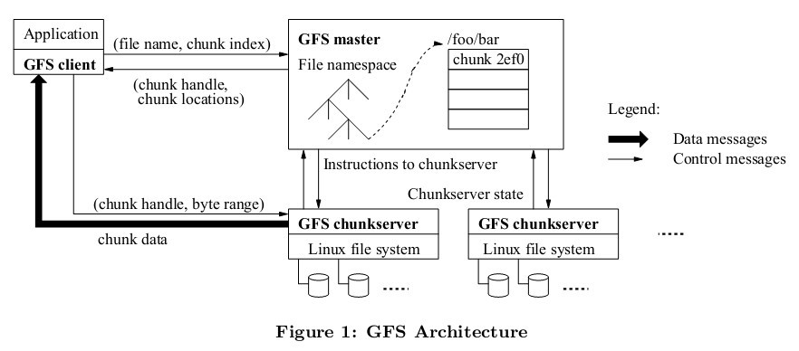
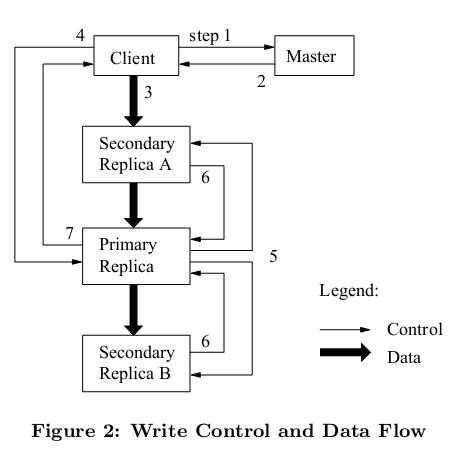

GFS是谷歌的底层文件系统
GFS简介
GFS(Google File System)是谷歌开发的一个分布式文件系统,目的是提供一个基于众多廉价服务器工作的基础层文件存储服务
GFS服务的是上层的Bigtable,Megastore等上层数据库应用
Google于2003年放出了GFS的设计论文
GFS的特点
- 仅支持文件追加操作 (适用于谷歌的爬虫数据存储需求)
- 文件块大小为64M (优点很多, 减少元数据量, 减低master服务器压力, 缺点也有)
- 采用中心化的master节点管理元数据 (可能造成单点故障和性能存储瓶颈)
核心组件
GFS的核心服务分为三个部分

GFS采用中心化的管理方式,Client作为应用使用方,Master作为ChunkServer的管理者,ChunkServer来负责数据的存储,client与master进行交互获取控制信息,然后与对应的ChunkServer交互获取具体的数据
Client
Client就是各种应用中使用GFS的客户端,以库文件的形式提供
MasterServer
MasterServer相当于对ChunkServer数据进行管理的管理者,存储整个文件传统的目录结构和文件元信息(包括Chunk分片信息和分片位置),Client从Master获取到具体的文件所在的ChunkServer的地址,然后直接与ChunkServer通信进行数据操作
ChunkServer
存储具体文件数据的服务器
内部数据管理机制
Master数据存储
MasterServer中存储3类信息:
- 文件系统的命名空间,整个文件系统的目录结构和Chunk基本信息
- 文件与Chunk的映射关系
- Chunk副本的位置信息,默认每个Chunk使用3个副本
由于MasterServer采用中心化的单节点管理,所以MasterServer的内存使用和性能都是我们要关注的点:
假设要存储1Pb的数据 MasterServer的内存使用为
(1P * 64b * 3) / 64Mb = 3Gb
1P : 是总数据大小
64Mb: 是每个Chunk的容量
3 : 是Chunk备份数量,默认为3
64b : 是每个Chunk的元属性所占的空间
ChunkServer存储的数据
ChunkServer中存储Chunk的具体文件内容
GFS将每个Chunk限制为64M, Chunk内部又分为众多的Block
同时ChunkServer还负责进行具体每个Chunk文件的读写操作, 接受并执行每个主Chunk(租约Chunk)的指令
负载均衡
由于GFS是由众多的廉价服务器组成的系统,所以系统的负载问题就是十分重要
GFS会根据每个服务器的负载和最近操作数来决定新数据的分布,以保证数据分布的均匀
一般有三个基本原则
- 同一个Chunk的多个副本不会放在同一个机架
- ChunkServer最近操作数有一定的限制
- 优先选择磁盘负载较低的服务器
第二点十分重要但时常被忽略,如果没有第二条规则限制, 很容易出现新加的机器由于负载过低导致短时间内大量数据都往这个机器上操作, 导致新添加的机器被压垮
ChunkServer启动时会向MasterServer上报存储的文件信息,也会周期性的向MasterServer上报自己的服务器状态, 以此来保证master上的ChunServer信息保持更新, 并及时发现ChunkServer的故障
垃圾回收
GFS采用标记回收的方式处理,删除一个文件之后,GFS并不会立即要求归还可用的物理空间,而是在元数据中将文件表示为一个不可用的隐藏名字,标记一个删除的时间戳
Master定时检查,文件被删除超过一定时间,Master会删除文件的元数据信息,之后在与ChunkServer交互时通知ChunkServer删除对应的Chunk信息,ChunkServer来处理后续的存储释放
过期的Chunk也是通过垃圾回收机制来进行删除
快照
一但对一个文件采取快照, GFS会通过租约机制先停止所有Chunk的写操作, 更新所有Chunk副本的引用计数
然后之后的写请求在执行时会copy一个Chunk副本,后续的修改都会落到新的Chunk上面
例如:
对文件 f 执行快照生成 f_back , f在GFS中有三个Chunk: C1,C2,C3
Master首先会回收C1,C2,C3的写租约,从而保证此时的f状态一致,然后Master复制 f的元数据生成一个新的文件 f_back
此时f_back的 Chunk仍然指向C1,C2,C3. 快照之前,C1,C2,C3只被一个文件引用,引用计数为1, 快照之后引用技术更新为2
当客户端向C3增加数据时,Master发现c3引用计数超过1,会通知ChunkServer生成新的C3’, 新的操作也会在C3’上面进行
f的Chunk映射也会更新为 C1,C2,C3’
ps: 这个机制有点像写时复制(Copy On Write)
读数据的流程
GFS中的文件读取流程大致如下:
1. client发送给master需要获取的文件名和偏移量(告诉服务器我要读某文件的某段数据)
2. master根据文件名查找命名空间中的文件对应的文件块id,返回对应的ChunkServer和副本的位置
3. client根据返回的ChunkServer的位置信息去对应的Chunk上面取对应的数据
ps: client会缓存一部分的ChunkServer元信息(某个ChunkServer在某个机器上面,副本分布情况等),但并不会缓存具体的文件内容, 以此降低Master服务气的负载, ChunkServer会对服务器的请求进行校验, 当ChunkServer信息有变动时, 客户端如果使用过期的Chunk信息, 能从ChunkServer得到反馈, 重新去Master获取最新的Chunk信息
容错机制
Matser的容错
Master会进行远程备份
Master存储文件的信息有
- 文件的命名空间信息(整个文件系统的目录)
- Chunk服务器和文件名的映射关系
- Chunk服务器的地址和副本信息
对于前两种操作GFS通过操作日志提供容错,日志会被被分到远程服务器
最后一种保存在ChunkServer上, 当ChunkServer跟master注册时,或者Master启动时,使用轮询的方式去ChunkServer获取元数据
ChunkServer的容错
- 每个Chunk默认拥有3个副本,分布在不同的ChunkServer上面
- ChunkServer在发送数据之前会检查block的32的校验和,如果不一致就会上报Master,Master会从其他副本进行复制,并删除出错的副本数据
数据的写
GFS中写入数据的流程如下:

master使用租约授权一个chunk副本为primary副本,执行client的写操作
- client需要更新一个数据块，询问master谁拥有该数据块的租约（谁是primary）；
- master将持有租约的primary和其它副本的位置告知client，client缓存之；
- client向所有副本传输数据，这里副本没有先后顺序，根据网络拓扑情况找出最短路径，数据从client出发沿着路径流向各个chunkserver，这个过程采用流水线（网络和存储并行）。chunkserver将数据放到LRU缓存；
- 一旦所有的副本都确定接受数据，client向primary发送写请求，primary为这个前面接受到的数据分配序列号（primary为所有的写操作分配连续的序列号表示先后顺序），并且按照顺序执行数据更新；
- primary将写请求发送给其它副本，每个副本都按照primary确定的顺序执行更新；
- 其它副本向primary汇报操作情况；
- primary回复client操作情况，任何副本错误都导致此次请求失败，并且此时副本处于不一致状态（写操作完成情况不一样）。client会尝试几次3到7的步骤，实在不行就只能重头来过了
总结
- GFS是一个中心化的分布式文件系统, 文件的具体信息分块存储, 同一文件可能被分为多个Chunk块, 每个Chunk块有多个副本
- Master负责文件的元数据的管理, ChunkServer负责文件具体数据的管理
- Client读数据需要先从Matser处获取到文件的Chunk分布信息, 然后去对应的ChunkServer上取得真正的文件数据
- Client写数据会先跟Master交互获取Chunk文件的信息, 然后向所有Chunk副本发送文件数据流, 最后向PrimaryChunk发送写入控制流, 由PrimaryChunk通知其他Chunk副本执行真正的写操作
- GFS可以以Chunk为单位在不同机器之间调度数据分布, 还有 CheckPoint和Redo日志来处理容错性